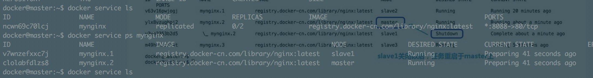
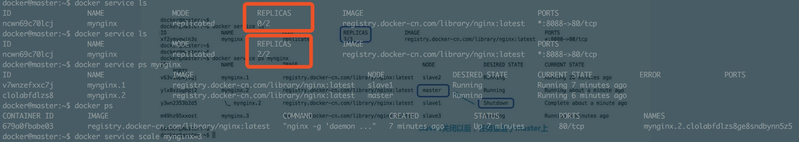
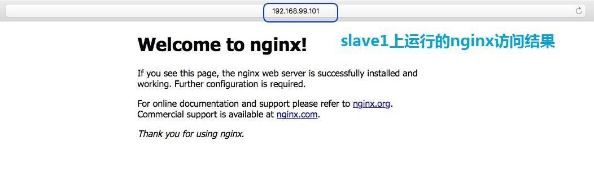
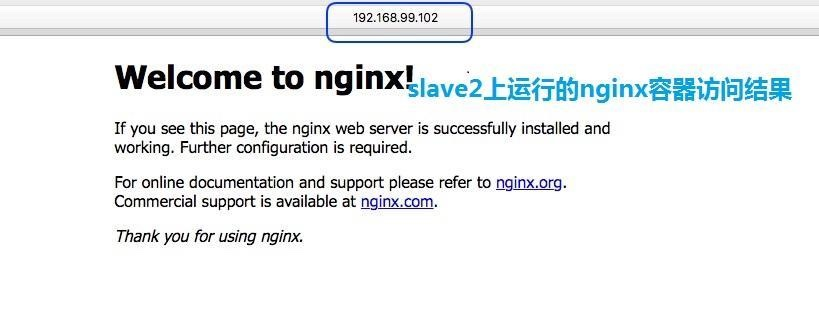
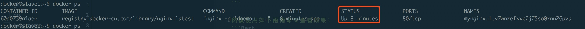
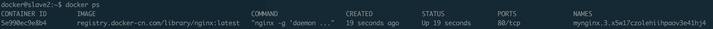
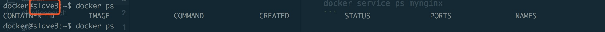
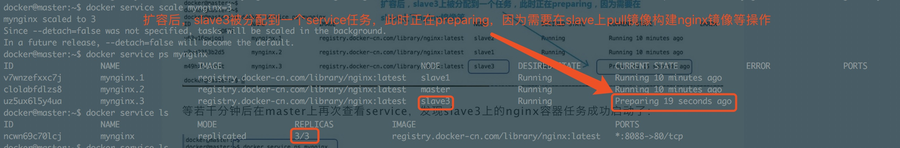
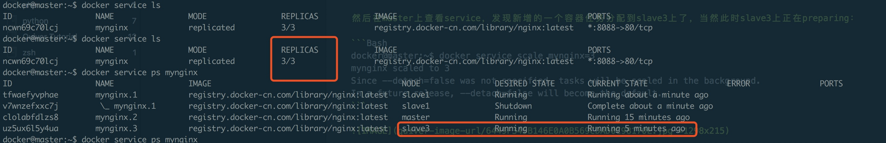
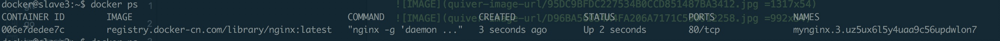

第二部分 docker swarm集群服务创建
開始在master節點上創建服務
我們計劃在該docker集群上部署高可用的nginx容器任務來作為演示： 在master節點上執行如下命令來創建名為mynginx的service，讓其有2份nginx容器副本分配到集群中去，起在8080端口：
docker service create --replicas 2 -d -p 8080:80 --name mynginx registry.docker-cn.com/library/nginx
然後使用如下兩條命令查看效果：
docker service ls
docker service ps mynginx

此处有两点需要注意：
-
我们使用了registry.docker-cn.com/library/nginx作为加速镜像，不然可能在slave上pull镜像的时候timeout
-
此处创建了service之后并不是nginx容器立马都在slave上起起来了，是需要等一段时间的（如，我等了近6分钟），因为在slave上还要去pull nginx镜像，再启动nginx容器等，没有那么快
等待若干分钟以后，我们再看效果，发现此时任务顺利地分发到slave1和slave2上了：

分别用浏览器访问：
http://192.168.99.101:8080和http://192.168.99.102:8080，
会得到如下结果：
 
成功访问到了slave节点中起起来的nginx服务！ 此时分别去slave1 和slave2 上查看容器运行情况，结果如下：
  
第三部分 扩容service任务
我们想将nginx容器平滑地扩容到3份，在master上执行：
docker service scale mynginx=3
然后在master上查看service，发现新增的一个容器任务分配到slave3上了，当然此时slave3上正在preparing：
docker@master:~$ docker service scale mynginx=3
mynginx scaled to 3
Since --detach=false was not specified, tasks will be scaled in the background.
In a future release, --detach=false will become the default.

等若干分钟后在master上再次查看service，发现slave3上的nginx容器任务成功启动了：

去slave3节点上docker ps看一下，发现容器确实启动了： 
参考文献：